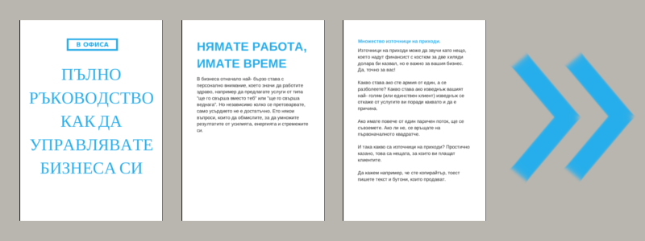

Пълно ръководство как да управлявате бизнеса си
Здравей, пътешественико в света на бизнеса!
Днес ще се запознаем със стъпките, с които всеки професионалист или мениджър се сблъсква, в стремежа си да спечели повече сделки за себе си и за тези, които зависят от тях.
Ако се питате какво да правя, има две пътеки пред бизнес собствениците независимо от етапа, на който се намирате.
Дори да сте по- напред от повечето, пак може да откриете някоя свежа идея, която сте пропуснали в лудницата, когато сте се развивали и всичко е било ново и плашещо.
Дори да сте още в началото на пътя, колкото по- рано въведете дадена практика, толкова по- дълго ще е ползвате от облагите, които води със себе си, така че ако четете докрая, може само да спечелите.
Да спомена и че тук са само контурите, но пък са събрани на едно място, така че може да се връщате отново и отново и да намирате нещо за по- подробно проучване. Планът е в бъдеще да се спрем на всеки въпрос поотделно. Засега търсачките са най- добрият ви приятел.
Все пак информацията може да ви се стори съкрушителна. Не се косете- изграждането на устойчив бизнес отнема месеци. Изберете си едно нещо, направете го и чак след това минете на следващото. Дори да сте започнали вече, дори да имате успех, винаги има нещо да научите. Дори може да го приложите в следващото си начинание!
Пробвайте, преценете кое работи за вас и кое не и не унивайте!
Вече сте напред от повечето хора, след като имате куража да се замислите и дори да предприемете постъпки да управлявате свой бизнес!
Пращам ви виртуална прегръдка, затегнете колани и без повече увъртания, да тръгваме!
Ако нямате време точно сега да се задълбочавате в четене, свалете ръководството под формата на pdf.
НЯМАТЕ РАБОТА, ИМАТЕ ВРЕМЕ
В бизнеса отначало най- бързо става с персонално внимание, което значи да работите здраво, например да предлагате услуги от типа "ще го свърша вместо теб" или "ще го свърша веднага". Но независимо колко се претоварвате, само усърдието не е достатъчно. Ето някои въпроси, които да обмислите, за да умножите резултатите от усилията, енергията и стремежите си.
Осигурете финансите.
Вярно е, че започването на бизнес не изисква толкова пари, колкото може да си мислим, но също така ако усилията ни са концентрирани в набирането на средства или финансови притеснения, няма как да успеем.
Повечето малки бизнеси се започват не когато ни дойде гениална или уникална идея, а когато ни попаднат пари или сме принудени да ги намерим за кратко време. Ако пък сме мислели по- дълго за този вариант, най- добре е да заложим на спестяване от заплатата си (добре е да имате достатъчно за няколко месеца поне със същия стандарт на живот), или заем от семейство, ако членовете на нашия малък зоопарк имат ясното съзнание, че шансът да си ги върнат е нищожен.
Направете си бизнес модел и бизнес план.
Започнете бизнес модела от пропуска, болката или липсата, за който предлагате решение (така нареченото стойностно предложение).
Лесно ли се продава? Има ли достатъчно клиенти? Нуждаещите се искат ли и способни ли са да платят? Какво би ви дало предимство пред настоящи и бъдещи конкуренти?
След като си отговорите на основните въпроси, е време да добавите цифри и детайли, което ще рече да съставите бизнес план.
Умна стратегия е да направи сметките отзад- напред. Представете си, че планът е успял. Как се чувствате? Колко клиента имате, за да работите стабилно, но ненатоварващо.
Дайте си краен срок! Ако се окаже недостатъчен, намалете какво се очаква да свършите дотогава.
Чудесно, имате печеливш модел и сте пресметнали всичко. Все още не е готово. Някой би разработил тази идея и би преуспял. Вие ли сте този някой? Самият бизнес, ден за ден, не трябва да ви отегчава в дългосрочен план.

Изтеглете канвата за бизнес модел оттук.
Изяснете си точно как искате да работите.
Добре е да си изясните каква е целта ви, защото тя ще определя следващите ви стъпки.
Отговорете си на следните въпроси.
На този етап достатъчно ли е бизнесът ви да печели колкото да преживявате или ви трябват повече пари за подобряване на здравето, психиката, за семейството или за пътуване?
Какво е идеалното ви ниво на натоварване?
С какви клиенти НЕ искате да работите?
Бихте ли запазили бизнеса малък, за да имате тотален контрол или евентуално ви е приятно да имате множество служители и сътрудници?
Кой е предпочитания ви канал за комуникация?
Като експерт ли искате да ви виждат (създава дистанция) или като някой, който още пробва и се учи (може да се идентифицират с вас).
Как бихте промотирали бизнеса си: онлайн, по телефона, на живо?
Какви инструменти ще използвате всеки ден?
Може дори да изготвите документ, който да изпращате, за да знаят клиентите какво точно ще се случи, след като купят или наемат услугите ви.
Валидирайте идеята си.
Има ли вече хора, които предлагат подобни услуги? Това може да не е зле тъй като е индикация, че са нужни.
Обаче проучете конкуренцията.
Вижте Инструмент за планиране на ключови думи на Google, който принципно ви предлага да планирате рекламите си, но за нашите цели ще ни покаже колко търсения има за това, което предлагате. Полезно е дори за традиционните бизнеси.
Споделете в социалните медии. Задайте прост въпрос, но не "бихте ли купили такова нещо", защото познатите бихта казали "да", за да ви угодят. Вместо това питайте за минали покупки и какво използват в момента за решение, както и какво НЕ искат.
Опитайте се да го продадете с отстъпка (50%), защото ако клиентите не са готови да го купят сега, когато е изгодно, сигурно е, че няма да дадат пълната цена.
За да го продадете предварително ви трябва прототип на хартия за приложение, първа глава от книга, илюстрация или друг вид пример или описание.
Дори да нямате готов продукт, напишете целева страница или имейл, с който да съобщите, че работите по нещо ново; приложете и снимки. Така получавате обратна връзка, дори преди да сте завършили продукта си. Освен че така става по- добър в движение, клиентите получават точно каквото им трябва. Също може в процеса да отстраните неща, които не се харесват, което не би било възможно ако предложите направо готовия продукт. Обратната връзка може да е също чрез въпросник, разговор с целевата група и т.н.
На първо време се опитайте да намерите поне три клиента, с който да практикувате: единият може да е познат, вторият- случаен, но третият ще ви затвърди, че наистина има интерес.
А когато наближавате финалната права, замислете се колко предварителни продажби ще ви уверят, че си заслужава да се занимавате точно с това. Още има време да предложите нещо подобно, но по- доходоносно, ако проучванията ви са ви подсказали нова насока. Вече създаденото може да се ползва все още, но с друга цел.
Офертите.
По- лесно е да убедите стари клиенти да работят пак с вас, отколкото да печелите нови клиенти. Освен че могат да ви наемат повторно, те могат да насочат познатите си към вашите услуги. Така че на първо време ви трябват възможно най- много клиенти.
Не оставяйте хората, които са се заинтересували от вас да си тръгнат и никога да не се върнат. Ако разчитате на интернет, проучете как да настроите ремаркетинг кампания. Ако ги срещате наживо, помолете ги да си оставят координати, в случай че имате нови продукти, които биха ги привлекли по- силно.
Определете защо точно не са готови още да купуват и/ или вземете някакви тяхни контакти като телефон или имейл адрес.
Накарайте ги да купят нещо малко от вас: опознавателна среща, лого, статия. Чак след това се опитвайте да им продадете главния пакет, а именно консултантски услуги, предоставяне на цялостно брандиране или абонамент за серия от статии.
Освен това, дайте възможност да ви платят повече, ако имат желание. Добавете по- скъпа опция, която да не изисква толкова повече работа за вас, но да добавя стойност за клиента, който в повечето случаи цени възможността за пряк достъп до вашите знания, умения и личната връзка.
Портфолио.
И да имате, и да нямате клиентска работа зад гърба си, замислете се за портфолио.
То е най- добрият начин да демонстрирате нагледно творенията си.
При портфолиото се изисква определен обем (доказателство за знания и упоритост) и отзиви (доказателство за умения).
Направете си пакет за добре дошли за клиенти.
При започването на сътрудничество, несигурността при работа с непознат човек може да доведе до недоразумения и разочарования. За да избегнете постоянното разменяне на имейли за дреболии, изпреварете въпросите на новите си клиенти, като им посочите цялата информация, която им трябва ясно организирана. Може да включва политиката ви за запазване на сесия, плащания, прекратяване на договора; какво да очакват при работата с вас; опознавателен въпросник и друга информация и файлове, които трябва да ви пратят.
ИМАТЕ РАБОТА, НЯМАТЕ ВРЕМЕ
Сега, след като се радвате на популярност, е времето да достигнете до възможно най- много хора, които се нуждаят от услугите ви без допълнителни усилия от ваша страна, като предложенията ви се сменят на "ще ви науча как се прави", "ще ви продам помощни материали, които да ви помогнат, а не толкова услугите си", "ще ви предложа повтаряемо или дългосрочно решение".
Освен това, вече имате някаква засилка и някакъв установен процес на работа, така че ще ви се наложи да помислете повече над начина си на работа, отколкото на планиране и постоянно търсене на клиенти.
Прегледайте какво работи и какво не.
Логично е, но в цялата лудница може би не е първата ви мисъл. Отделете време за стратегическо планиране, въпреки че сте затрупани с ежедневните задачи.
Очаквания, правила и граници.
Една от причините да се чувствате претоварени е, че клиентите ви си позволяват запитвания и молби по всяко време на денонощието.
Но част от работата ви е да обучите клиентите си как да работят с вас.
Може да ви се струва странно, но ако дадете ясно работните си часове и в какъв срок да очакват да им отговорите, това е по- добре за вас, и е по-добре за клиентите ви.
Сложете тази информация в подписа на имейла си например.
Сложете я и в клиентския си портал! Какво представлява това? Просто място, където клиентите ви може да отидат, за да проверят нещо. Може да е индивидуален или еднакъв за всеки. Не е нужно да е сложно. Може да направите специална страничка, документ в Google Диск или папки с документи в dox.bg или Dropbox например. Дори прост pdf документ би бил достатъчен. Може да съдържа договорките ви, как става промяна в обема на работата или в плащанията (отсрочки, вноски, начини на плащане); оферти, договори, фактури; както и често задавани въпроси.
Дори и да не ви се занимава да събирате на едно място всички тези неща, помислете как ще третирате връщане на пари, спешни поръчки, възможност за абонамент и т.н.
Организиране и автоматизация.
Първият ви подтик може да е повишаване на собствената продуктивност. И в това си има смисъл, за да не се разпилявате, ако може да свършите една работа за един час вместо за четири. Представете си, защото е вярно, че 10% подобрение в тази област ви подарява цял месец.
Заетостта не е критерий за ценността ви, въпреки всичко което ви нашепват добронамерените гласове.
Първата и най- важна стъпка, за която да се замислим е: фокус. Ако имаме да вършим сто неща, нито едно от тях няма да се свърши както трябва. След като определим приоритета си, трябва да избягваме другите наши проекти на всяка цена. Не е лесно, знам. Затова трябва да се научим да казваме „не“ така че да не разочароваме или отблъскваме хората, които искат да разчитат на нас.
Сега знаем върху какво да се концентрираме и как.
Следващата стъпка е да създадем навици, за да изпълним визията си ден след ден. За това помага преди започване на работа да си създадем ритуали, които да ни подготвят мислено за предстоящата задача. Може да си сипем чаша кафе, да си отворим програмите и инструментите, които ще са ни нужни, или да подредим инструментите си.
Отмина окуражаването на мултитаскинга, защото изследователите вече са преценили, че сменянето на задачи и прекъсванията ни отнемат повече отколкото ни се струва. Затова може да сложим настоящото задание на цял екран, да практикуваме групиране на дейности (или така нареченото batching) и да се справяме с новостите в зависимост дали са спешни или важни.
Във всяка работа има определена рутина. За да се справим с повтарящите се или запланирани дейности, може да си изготвим шаблонни отговори, да поддържаме изрядна организация на файловете, да ползваме календар както за срещи, така и за график на задачите и т.н.
Но в крайна сметка знайте, че всички тези трикове си имат лимит, както и вие.
Също трябва да пазим здравето си преди да го изгубим. Пийте вода! Не пропускайте ядене- за целта си изгответе меню за седмицата и си изберете бързи, здравословни и вкусни рецепти (и ги направете предварително)!
Увеличаване на цените.
Първоначално, когато сме все още не съвсем уверени в успеха си на професионалист, може да изглежда плашещо да поискаме правилната цена.
Решете за какво плащат клиентите- за времето ви или за решение. Ако до сега сте таксували на час, може заплащането ви да се окаже доста под нивото на стойността на проекта. При този подход колкото по- бързо вършите нещо, толкова по- малко ви носи. Ако предложите цена за свършена работа, може би изглежда по- скъпо на клиента ви, но с малко обучение и въпроси, бихте ги убедили, че си заслужава. Във всеки случай, това решение зависи от доколко сте сигурни, че услугата ви ще донесе приходи на клиентите ви. Ако сте пробвали, че води до резултат в дузина различни индустрии, не се колебайте да поискате да ви плащат според стойността, която ще добавите. Ако ли не, помислете поне за увеличаване на цифрата. Няма по- лошо от разочарованието да отдаваш кръв, пот и сълзи за някакви стотинки. Така освен време и пари, губиш и радостта от труда си.
За да не възразяват клиентите на цените ви, не трябва да ги оставяте да сравняват: те не получават просто копирайтърски/ финансови/ дизайнерски услуги, а решение на проблем плюс експертиза. Хората имат нужда от нещата, които четете и с които пълните главата си, дори и да ви се струват тривиални.
Има няколко подхода за увеличаване на хонорара ви: първо, заявете очевидното, а именно "Научих много, откакто започнах и натрупах опит"; второ, добавете бонуси и екстри (темплейти, възможност за задаване на въпроси) към пакета, който предлагате, за да изглежда като че клиентите ви печелят повече, отколкото допълнителните пари, които ще ви дават; трето, дайте им възможност да плащат същата цена, но да не са включени толкова усилия от ваша страна, един вид намалена услуга.
При деликатните въпроси каквито са паричните бъдете много ясни в комуникацията си: откога важат новите цени, има ли отсрочка за дългогодишни клиенти, има ли други оферти, които са с по- достъпна цена, но съдържат базовата услуга.
Припомнете им какъв ще е резултата от услугите ви и как може да ги постигнете с по- малко усилия (създайте темплейти и други ресурси, предоставете съвети, за да може те да поемат част от работата).
Припомнете им в детайли колко ще им спечели вашата услуга или колко ще им спести, в зависимост от това каква е.
Минете от еднократна сесия към пакети, защото при по- продължителна работа има по- малко опознавателни и други дейности, с които да губите излишно време.
Партньорства.
Често срещана нагласа отначало е, че други бизнеси подобни на нашия са просто конкуренция. Но неслучайно автори пишат отзиви за чужди книги. Когато повече хора четат, всички печелят.
Например един от най- ефикасните начини да започнете някакъв бизнес е да намерите фирма или учреждение, с които да работите в областта, която ви интересува. Вие вършите работата, те вършат страничните дейности.
Положението може да е обратното и вие да имате нужда от помощ, защото интересът към вашите продукти или услуги е по- голям отколкото е възможно да поемете.
Сътрудниците ви могат да бъдат общо два вида: такива, които вършат същото като вас или такива, които вършат нещо допълващо, като например дизайнер и уеб разработчик, счетоводител и адвокат или шивач и обущар или пък ви позволяват да се концентрирате върху главната си дейност, а те поемат административни, маркетинг и подобни функции.
Партньорства може да завържете както с фрийлансъри, така и с организации.
Но имайте предвид, че дори и да ви облекчават, те създават и задачи. Предимството е, че така ще работите не толкова с клиенти, колкото със съгласуване на сътрудници, но затова ще е нужно оптимизиране на бизнес процесите ви, както и някои допълнителни инструменти, с които да споделяте календар, документи и спецификации.
Освен това, ще се наложи да комуникирате принципи и начин на работа, които са смътно оформени в главата ви. Уговарянето и координирането на хора може да бъде вбесяващо или трудоемко. Но помислете и за отсрещната страна. Колкото по- независим искате да е наемника ви, толкова повече време ще ви отнеме да го обучите първоначално, защото не е ваш служител (има други задачи и приоритети) и се нуждае от информация за свършването на неговата част от работата (не е толкова запознат с организацията и ценностите ви).
Обучавайте.
След като сте познати вече като експерт в областта си, натрупали сте опит и увереност, може да пожелаете вместо да помагате само на един клиент, да помогате на много.
Тук идват тренингите и курсовете.
Има хора, които са готови веднага да кажат, че искат услугите на професионалист. Други се интересуват, но не могат да си го позволят в момента. Научете ги какви стъпки трябва да предприемат за да свършат сами каквото им е нужно. Веднъж осъзнаят ли колко усилия трябват, освен това може да видят, че не е лесно да си направиш сам, защото се изискват доста знания и умения. Трудно е- следователно е ценно, а могат да предадат изпълнението на друг, тоест на вас.
Множество източници на приходи.
Източници на приходи може да звучи като нещо, което надут финансист с костюм за две хиляди долара би казвал, но е важно за вашия бизнес. Да, точно за вас!
Какво става ако сте армия от един, а се разболеете? Какво става ако изведнъж вашият най- голям (или единствен клиент) изведнъж се откаже от услугите ви поради каквато и да е причина.
Ако имате повече от един паричен поток, ще се съвземете. Ако ли не, се връщате на първоначалното квадратче.
И така какво са източници на приходи? Простично казано, това са нещата, за които ви плащат клиентите.
Да кажем например, че сте копирайтър, тоест пишете текст и бутони, които продават.
Главният паричен поток във вашия случай може да е написването на няколко статии за електронен магазин, лайфстайл сайт или стартиращи малки бизнеси. Да предлагате абонамент.
Друг паричен поток може да е анализ на съществуващия сайт на клиент, след което да предоставите съвети как да го подобрят. Еднократна транзакция.
Друг вариант може да е курс, онлайн или на живо, който водите, който запознава стартиращи бизнеси с основи, техники и трикове на занаята, които сте събрали през кариерата си, за да могат те сами да пишат интересни статуси за фейсбук и статии за блога си.
Също може да напишете книга по въпроса, така че всяка продадена бройка да не изисква постоянни усилия.
Вариантите са безгранични.
Не е толкова страшно нали? Какви допълнителни парични потоци са подходящи за вашата ниша?
Демаркетинг и предварително записване.
Ако имате намерение да свиете дейността си, може да спестите пари от реклама, но не хубаво да зарязвате съвсем връзките с настоящи и потенциални клиенти. Това се нарича демаркетинг.
При намаляване или спиране на промотирането, може да помислите за създаване на списък с чакащи клиенти. Щом получите запитвания, вместо да поемате веднага поръчката, отговорете, че в момента графикът ви е запълнен, но ако интересуващите се оставят някакви координати, ще се свържете с тях по- късно.
В повечето случаи, не е толкова спешно, колкото купувачите казват, а знаете, че качествената услуга може да дръпне бизнеса им напред по- бързо от помощта, която може да им предостави някой случаен братовчед или племенник.
Плюс междувременно може да им поискате допълнителна информация, която ще направи услугата ви по- добра, защото колкото повече опознавате техните нужди и бизнес, толкова по- персонализирана полза бихте им предоставили. А попълването на такива въпросници, които изискват стратегическа мисъл, изисква доста обмисляне. Може да направите красиво лого и без да познавате марката, но ако отделите време, то ще се вписва в пъти по- добре в цялостната картинка.
Накратко всички печелят.
За да поддържате някаква връзка за обявяване кога сте свободни да поемете по- голямо натоварване е добре да направите списък с имейли или телефони, който може да е в екселска таблица или под формата на група в електронната ви поща например.
И помненете, в бизнеса най- важното е клиента, така че ако ви измъчват съмнения, питайте, бъдете на местата, които те посещават- било то facebook групи, бизнес вечери или фитнес центрове.
За стабилна конструкция ви трябва здрава основа.
На добър път!
Ако ви трябват още знания по споменатите въпроси, може би някои от предоставените безплатни обучения ще пасне на това, което търсите. Вижте ги тук.